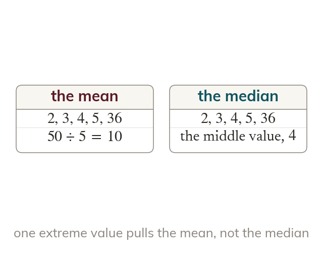
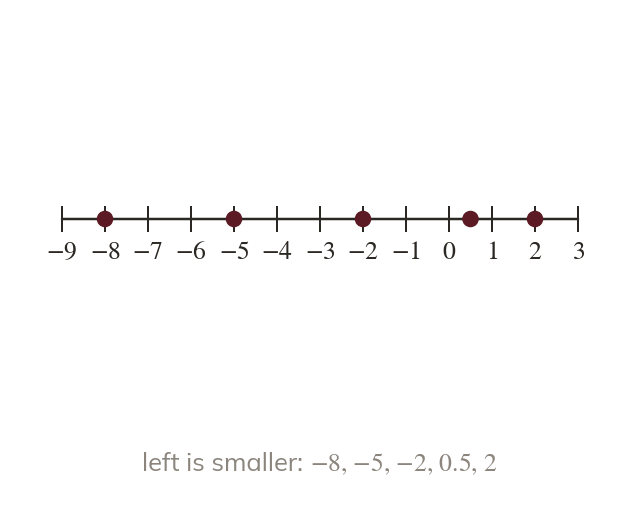
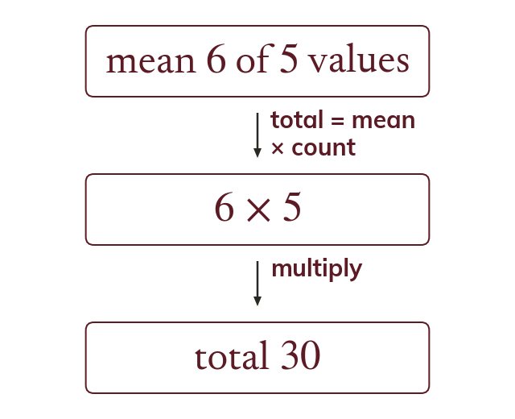
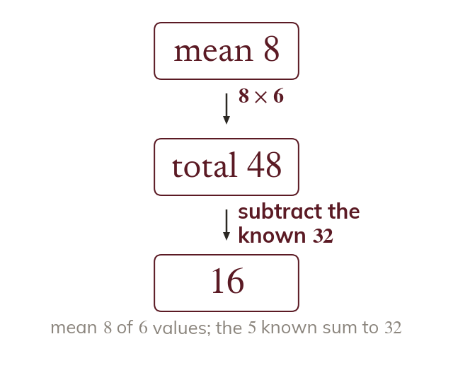

You know how to find mean, median, mode and range from straightforward data - today's data gets trickier (negatives, decimals, an even count) and the skill flips: working backwards from an average to find a missing value.
By the end you’ll know…
The same data set can give three quite different averages.
The mean uses every value, so one extreme value shifts it; the median depends only on position, so it resists extremes.
Because the mean is the total divided by the count, the total can be recovered as mean x count.
A missing value is found by subtracting the known values from that total.
By the end you can
G3Find all four measures from a data set, including data with an even number of values and data containing negatives or decimals.
G5Solve problems involving averages, including finding a missing value given the mean.
Work down the page at your own pace. Write every answer in your book first, then click to check it.
01
Do Now
About 5 minutes
1
Multiply using a formal written method.
2
Divide by using a formal written method.
3
What is ? What is ?
;
4
Work out
5
Work out
Remember these?
LAST LESSONFind the range of
LAST WEEKA pencil costs n pence and a rubber costs pence. Write an expression, in pence, for the cost of pencils and a rubber.
LAST TERM Use it to write down
— the has doubled, so the product doubles.
LAST YEARRound to the nearest
02
Learn
Read each card, then follow the worked examples one step at a time.

Averages resist different things
One extreme value shifts the mean a lot. The median depends only on position and barely moves.
The mean uses every single value, so one extreme value shifts it a lot; the median depends only on position in the ordered list, so it resists extreme values almost completely.

Ordering negatives and decimals
Order negatives and decimals as on a number line. More negative means smaller, whatever the digit.
Ordering data with negative numbers or decimals uses the same rules as ordering any signed numbers - more negative means smaller, regardless of the digit shown, and decimals are compared using their actual value, not rounded first.
WORKED EXAMPLE A
Find the median and range of
Order them
Take the third of fivemedian
Subtract the smallestrange
Make it an addition
WORKED EXAMPLE B
Find the mean and median of
Write the mean
Mean
Order them
Average the middle twomedian
YOUR TURN · a
Find the median and range of (Hint: order the negatives carefully - which is actually the smallest?)
Ordered: The median is and the range is
YOUR TURN · b
Find the mean and median of
Mean Ordered: so the median is
03
Check your understanding
Pick an answer. If it's wrong, the feedback tells you which mistake it was.
Order these from smallest to largest:
Yes. The more negative, the smaller:
Not quite. is further below than so is smaller.
Not quite. Negatives come before and is the smallest.
Not quite. is bigger than every negative, so it goes after
Find the mean of
Yes. Total three values:
Not quite. Don't round the values first. Total so
Not quite. There are values, so
Not quite. is the total. Now divide by :
A data set has one very large extreme value added to it. What happens to the median?
Yes. The median depends on position, so one big value only nudges it.
Not quite. The mean uses every value, so it jumps. The median only moves by one place.
Not quite. The extreme value goes at the end of the list, not the middle.
Not quite. Order the values and find the middle as usual.
04
Practise
mark as you go
Checkpoint. Find the median and range of and separately the mean of Show your working - I'll check it before you move on.Show your teacher before you go on
1
Find the median and range of
In order: Median Range
2
Find the mean of
Total: Mean
3
Find the median of
In order: Median
4
Find the mean of
Total: Mean
5
Find the range of
Range
6
Find the mode, median and range of
In order: Mode median Range
EXT
Four days had temperatures −3°C, 2°C, −1°C and 6°C. Find the mean.
A fifth day is −9°C. Find the new mean and median.
Mean = 1°C New mean = −1°C In order: so median = −1°C
05
Learn
Read each card, then follow the worked examples one step at a time.

Recovering the total from the mean
The total can be recovered from the mean: total = mean × count.
Because the mean is the total divided by the count, the total can be recovered by multiplying: total = mean × count.

Finding a missing value
First find the total for all the values: mean × full count. Then subtract the known values from that total.
A missing value is found by working out the correct total for ALL the values (mean × the full count, including the missing one), then subtracting the known values from that total.
WORKED EXAMPLE C
The mean of numbers is What is their total?
Write the meantotal ÷
Multiply both sides by total
WORKED EXAMPLE D
Five numbers have a mean of Four of them are Find the fifth.
Find the total
Add the four given
Fifth number
YOUR TURN · c
The mean of numbers is What is their total? (Hint: use total = mean × count.)
Total = mean × count
YOUR TURN · d
Six numbers have a mean of Five of them are Find the sixth.
Total of all six The five known numbers add to so the sixth is
06
Check your understanding
Pick an answer. If it's wrong, the feedback tells you which mistake it was.
The mean of numbers is Which calculation finds their total?
Yes. Mean = total ÷ count, so total = mean × count:
Not quite. Mean = total ÷ count, so total = mean × count, not plus.
Not quite. Mean = total ÷ count, so total = mean × count:
Not quite. Dividing again goes the wrong way. Total = mean × count:
What is the fifth number, if five numbers have a mean of and four of them are and ?
Yes. Total Known four: So
Not quite. Take from the total of all five, not from
Not quite. The missing value needn't equal the mean.
Not quite. is the total of all five. Take away the four you know:
What is the sixth number, if six numbers have a mean of and five of them are and ?
Yes. Total Known five: So
Not quite. Take from the total of all six, not from
Not quite. The missing value needn't equal the mean.
Not quite. is the total of all six. Take away the five you know:
07
Practise
mark as you go
Checkpoint. The mean of numbers is Four of them are Find the fifth, showing the total you used. Show your working - I'll check it before you move on.Show your teacher before you go on
1
The mean of numbers is What is their total?
Total
2
Four numbers have a mean of Three are and Find the fourth.
Total
Fourth
3
Five numbers have a mean of Four are and Find the fifth.
Total
Fifth
4
Six scores have a mean of Five are and Find the sixth.
Total
Sixth
5
Three numbers have a mean of Two are and Find the third.
Total Third
EXT
Four numbers have a mean of A fifth is added and the mean becomes Find the fifth number.
Old total New total Fifth
08
Exit ticket
On paper, on your own, then check
1
Explain, using an example, why the total can be recovered as mean × count.
The mean is total ÷ count, so total = mean × count: a mean of over numbers gives a total of
2
Find the median and range of
Median and range
3
The mean of numbers is Three of them are Find the fourth.
Finished? Next lesson: 7.8.3 Comparing Data Sets.
Practise more
After the lesson, or whenever you want more
Dr Frost
Log in, then search for a code to practise that skill.
132bDetermine the total given the mean of a set of data and the total number of data points.
132cDetermine a missing number from a list given the mean.